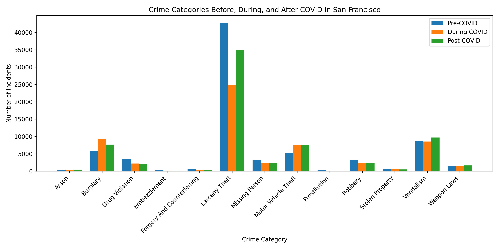

This page is dedicated to investigating and exploring patterns on SF crime data during the COVID-19 pandemic. The dataset contains x crimes from the period of 2019 to 2022. The data contains temporal and spatial information which is used to uncover and highlight some of these patterns. This project has hand-picked a select few personal focus crimes to explore in more depth, these include: Arson, Burglary, Drug Violation, Embezzlement, Forgery and Counterfeiting, Larceny Theft, Missing Person, Motor Vehicle theft, Prostitution, Robbery, Stolen Property, Vandalism, Weapon Laws
Scroll down to explore different perspectives on the data.
This visualization compares the number of crimes in each category before and during the pandemic. It highlights which crime types saw the largest increases. From the plot, burglary and motor vehicle theft stands out with a significant increase during the pandemic compared to other crimes.

Focusing on burglary, we want to figure out where these crime occur the most frequent in SF.
Looking at trends over time allows us to see whether crime is increasing, decreasing, or shifting in nature.
Something here...